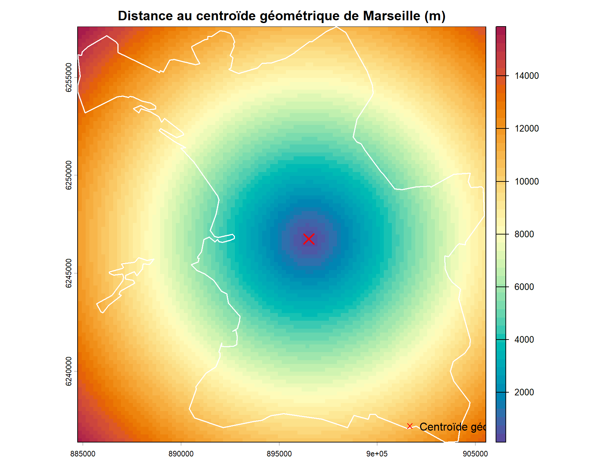
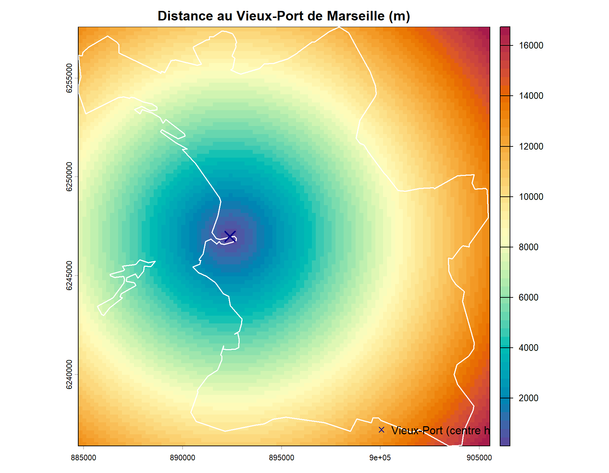
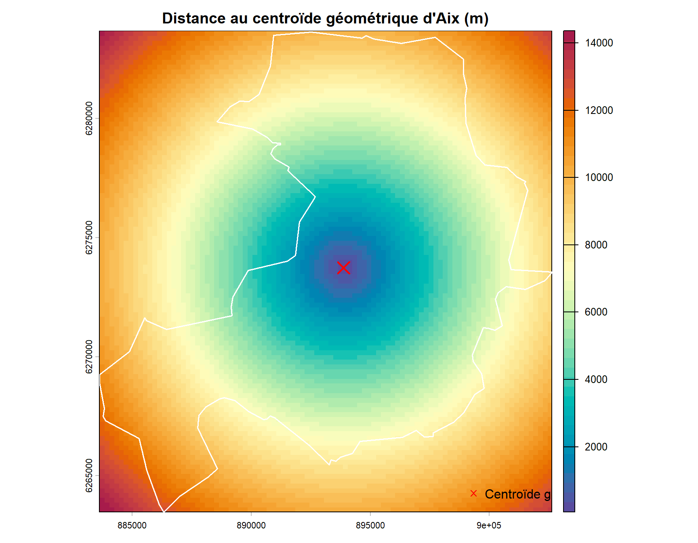
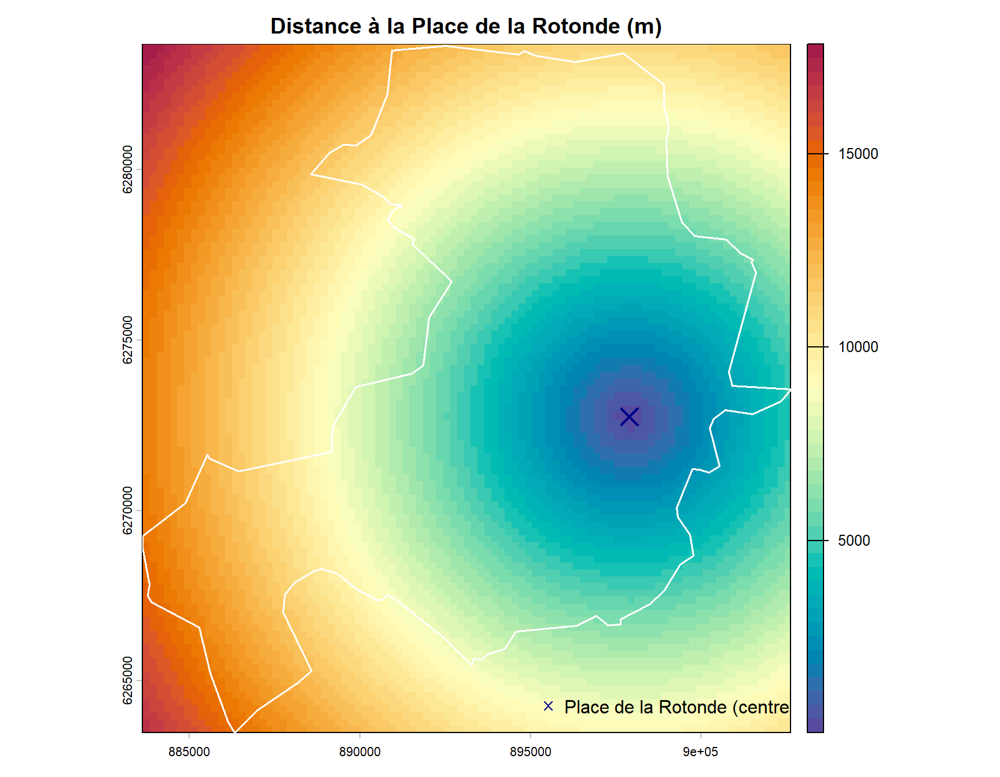
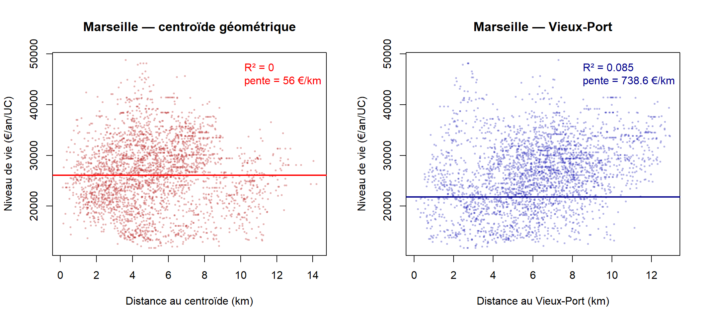
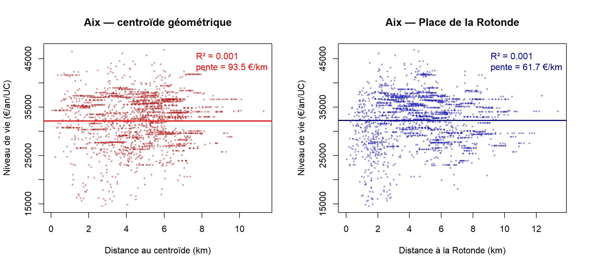
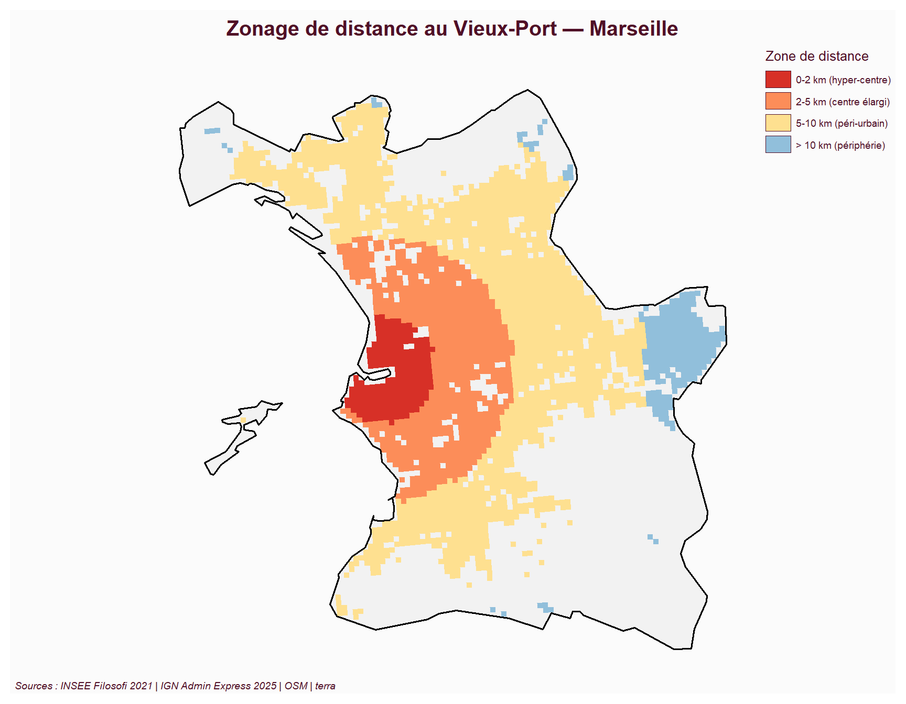
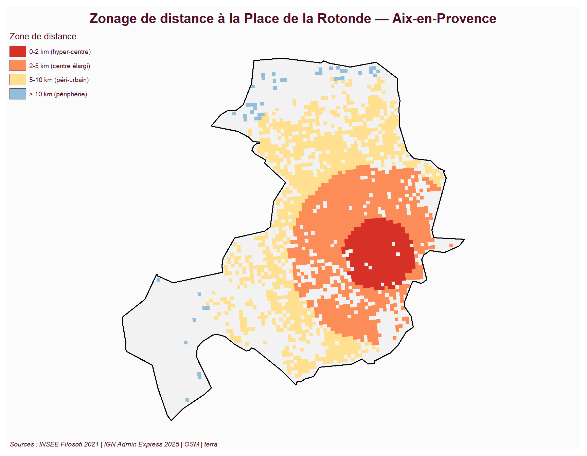

library(sf)
library(terra)
library(mapsf)Géotraitements Raster
Introduction
Cette page présente les géotraitements raster appliqués à notre problématique. Pour tester quantitativement le gradient centre-périphérie, on construit pour chaque commune un raster de distance au centre, puis on étudie la corrélation entre cette distance et le niveau de vie moyen.
Une difficulté méthodologique apparaît rapidement : qu’est-ce que le “centre” d’une ville ? On compare ici deux approches :
- Centroïde géométrique de la commune (centre de gravité de la surface)
- Centre historique réel (Vieux-Port pour Marseille, Place de la Rotonde pour Aix-en-Provence)
Cette comparaison permet de distinguer les inégalités radiales (gradient régulier) des inégalités sectorielles (poches géographiques de richesse/pauvreté).
Schéma de géotraitement┌──► Centroïde géométrique ──► raster distance ──► extractioncommunes.gpkg ──┤ │
└──► Centre historique ────► raster distance ──► extraction │ filosofi.gpkg ──────────────────────────────────────────────────────────┤ │ ▼ régression niveau_vie ~ distance (par ville × par type de centre) ## Librairies
Chargement des données
communes <- st_read("data/communes.gpkg", quiet = TRUE)
filosofi <- st_read("data/filosofi.gpkg", quiet = TRUE)
cat("Communes :", nrow(communes), "\n")Communes : 2 cat("Carreaux :", nrow(filosofi), "\n")Carreaux : 5681 Définition des centres
Centroïdes géométriques
marseille <- communes[communes$nom_officiel == "Marseille", ]
aix <- communes[communes$nom_officiel == "Aix-en-Provence", ]
centroide_m <- st_centroid(marseille)
centroide_a <- st_centroid(aix)Centres historiques (coordonnées vérifiables sur OpenStreetMap)
- Marseille — Vieux-Port : 5,3698° E / 43,2961° N
- Aix-en-Provence — Place de la Rotonde : 5,4474° E / 43,5263° N
# Création des points en WGS84 puis reprojection en Lambert-93 (EPSG:2154)
centre_hist_m <- st_sfc(st_point(c(5.3698, 43.2961)), crs = 4326) |>
st_transform(2154)
centre_hist_a <- st_sfc(st_point(c(5.4474, 43.5263)), crs = 4326) |>
st_transform(2154)
cat("Centres historiques projetés en Lambert-93 ✓\n")Centres historiques projetés en Lambert-93 ✓Raster de distance — MARSEILLE (centroïde géométrique)
r_base_m <- rast(vect(marseille), res = 200)
dist_centroide_m <- distance(r_base_m, vect(centroide_m))
plot(dist_centroide_m, main = "Distance au centroïde géométrique de Marseille (m)",
col = rev(hcl.colors(50, "Spectral")))
plot(st_geometry(marseille), add = TRUE, border = "white", lwd = 1.5)
plot(st_geometry(centroide_m), add = TRUE, pch = 4, cex = 2, col = "red", lwd = 2)
legend("bottomright", legend = "Centroïde géométrique", pch = 4, col = "red", bty = "n")
Raster de distance — MARSEILLE (Vieux-Port)
dist_hist_m <- distance(r_base_m, vect(centre_hist_m))
plot(dist_hist_m, main = "Distance au Vieux-Port de Marseille (m)",
col = rev(hcl.colors(50, "Spectral")))
plot(st_geometry(marseille), add = TRUE, border = "white", lwd = 1.5)
plot(st_geometry(centre_hist_m), add = TRUE, pch = 4, cex = 2, col = "darkblue", lwd = 2)
legend("bottomright", legend = "Vieux-Port (centre historique)", pch = 4, col = "darkblue", bty = "n")
Raster de distance — AIX-EN-PROVENCE (centroïde géométrique)
r_base_a <- rast(vect(aix), res = 200)
dist_centroide_a <- distance(r_base_a, vect(centroide_a))
plot(dist_centroide_a, main = "Distance au centroïde géométrique d'Aix (m)",
col = rev(hcl.colors(50, "Spectral")))
plot(st_geometry(aix), add = TRUE, border = "white", lwd = 1.5)
plot(st_geometry(centroide_a), add = TRUE, pch = 4, cex = 2, col = "red", lwd = 2)
legend("bottomright", legend = "Centroïde géométrique", pch = 4, col = "red", bty = "n")
Raster de distance — AIX-EN-PROVENCE (Place de la Rotonde)
dist_hist_a <- distance(r_base_a, vect(centre_hist_a))
plot(dist_hist_a, main = "Distance à la Place de la Rotonde (m)",
col = rev(hcl.colors(50, "Spectral")))
plot(st_geometry(aix), add = TRUE, border = "white", lwd = 1.5)
plot(st_geometry(centre_hist_a), add = TRUE, pch = 4, cex = 2, col = "darkblue", lwd = 2)
legend("bottomright", legend = "Place de la Rotonde (centre historique)", pch = 4, col = "darkblue", bty = "n")
Extraction des distances pour chaque carreau
# Carreaux Marseille
filo_m <- filosofi[!is.na(filosofi$ville) & filosofi$ville == "Marseille", ]
filo_m$dist_centroide <- extract(dist_centroide_m, vect(filo_m), fun = mean, na.rm = TRUE, ID = FALSE)[, 1]
filo_m$dist_historique <- extract(dist_hist_m, vect(filo_m), fun = mean, na.rm = TRUE, ID = FALSE)[, 1]
# Carreaux Aix
filo_a <- filosofi[!is.na(filosofi$ville) & filosofi$ville == "Aix-en-Provence", ]
filo_a$dist_centroide <- extract(dist_centroide_a, vect(filo_a), fun = mean, na.rm = TRUE, ID = FALSE)[, 1]
filo_a$dist_historique <- extract(dist_hist_a, vect(filo_a), fun = mean, na.rm = TRUE, ID = FALSE)[, 1]
cat("Marseille — distance max au Vieux-Port :", round(max(filo_m$dist_historique, na.rm=TRUE)/1000, 1), "km\n")Marseille — distance max au Vieux-Port : 12.9 kmcat("Aix — distance max à la Rotonde :", round(max(filo_a$dist_historique, na.rm=TRUE)/1000, 1), "km\n")Aix — distance max à la Rotonde : 13.4 kmRégressions — MARSEILLE
df_m <- st_drop_geometry(filo_m)
df_m <- df_m[!is.na(df_m$dist_historique) & !is.na(df_m$niveau_vie), ]
par(mfrow = c(1, 2))
# Centroïde
plot(df_m$dist_centroide / 1000, df_m$niveau_vie,
xlab = "Distance au centroïde (km)", ylab = "Niveau de vie (€/an/UC)",
main = "Marseille — centroïde géométrique",
pch = 20, col = rgb(0.7, 0.1, 0.1, 0.2), cex = 0.5)
mod_m_c <- lm(niveau_vie ~ dist_centroide, data = df_m)
abline(mod_m_c, col = "red", lwd = 2)
r2_mc <- round(summary(mod_m_c)$r.squared, 3)
pente_mc <- round(coef(mod_m_c)[2] * 1000, 1)
legend("topright", legend = paste0("R² = ", r2_mc, "\npente = ", pente_mc, " €/km"),
bty = "n", text.col = "red")
# Vieux-Port
plot(df_m$dist_historique / 1000, df_m$niveau_vie,
xlab = "Distance au Vieux-Port (km)", ylab = "Niveau de vie (€/an/UC)",
main = "Marseille — Vieux-Port",
pch = 20, col = rgb(0.1, 0.1, 0.7, 0.2), cex = 0.5)
mod_m_h <- lm(niveau_vie ~ dist_historique, data = df_m)
abline(mod_m_h, col = "darkblue", lwd = 2)
r2_mh <- round(summary(mod_m_h)$r.squared, 3)
pente_mh <- round(coef(mod_m_h)[2] * 1000, 1)
legend("topright", legend = paste0("R² = ", r2_mh, "\npente = ", pente_mh, " €/km"),
bty = "n", text.col = "darkblue")
par(mfrow = c(1, 1))Régressions — AIX-EN-PROVENCE
df_a <- st_drop_geometry(filo_a)
df_a <- df_a[!is.na(df_a$dist_historique) & !is.na(df_a$niveau_vie), ]
par(mfrow = c(1, 2))
plot(df_a$dist_centroide / 1000, df_a$niveau_vie,
xlab = "Distance au centroïde (km)", ylab = "Niveau de vie (€/an/UC)",
main = "Aix — centroïde géométrique",
pch = 20, col = rgb(0.7, 0.1, 0.1, 0.3), cex = 0.6)
mod_a_c <- lm(niveau_vie ~ dist_centroide, data = df_a)
abline(mod_a_c, col = "red", lwd = 2)
r2_ac <- round(summary(mod_a_c)$r.squared, 3)
pente_ac <- round(coef(mod_a_c)[2] * 1000, 1)
legend("topright", legend = paste0("R² = ", r2_ac, "\npente = ", pente_ac, " €/km"),
bty = "n", text.col = "red")
plot(df_a$dist_historique / 1000, df_a$niveau_vie,
xlab = "Distance à la Rotonde (km)", ylab = "Niveau de vie (€/an/UC)",
main = "Aix — Place de la Rotonde",
pch = 20, col = rgb(0.1, 0.1, 0.7, 0.3), cex = 0.6)
mod_a_h <- lm(niveau_vie ~ dist_historique, data = df_a)
abline(mod_a_h, col = "darkblue", lwd = 2)
r2_ah <- round(summary(mod_a_h)$r.squared, 3)
pente_ah <- round(coef(mod_a_h)[2] * 1000, 1)
legend("topright", legend = paste0("R² = ", r2_ah, "\npente = ", pente_ah, " €/km"),
bty = "n", text.col = "darkblue")
par(mfrow = c(1, 1))Synthèse comparative
resultats <- data.frame(
Ville = c("Marseille", "Marseille", "Aix-en-Provence", "Aix-en-Provence"),
Définition_centre = c("Centroïde géom.", "Vieux-Port", "Centroïde géom.", "Place Rotonde"),
Pente_eur_par_km = c(round(coef(mod_m_c)[2]*1000, 1),
round(coef(mod_m_h)[2]*1000, 1),
round(coef(mod_a_c)[2]*1000, 1),
round(coef(mod_a_h)[2]*1000, 1)),
R2 = c(round(summary(mod_m_c)$r.squared, 3),
round(summary(mod_m_h)$r.squared, 3),
round(summary(mod_a_c)$r.squared, 3),
round(summary(mod_a_h)$r.squared, 3))
)
print(resultats, row.names = FALSE) Ville Définition_centre Pente_eur_par_km R2
Marseille Centroïde géom. 56.0 0.000
Marseille Vieux-Port 738.6 0.085
Aix-en-Provence Centroïde géom. 93.5 0.001
Aix-en-Provence Place Rotonde 61.7 0.001Interprétation
Les régressions ci-dessus testent l’hypothèse d’un gradient radial simple du niveau de vie en fonction de la distance au centre. Les coefficients de détermination (R²) très faibles, quel que soit le centre choisi (centroïde géométrique ou centre historique), montrent que la distance au centre seule explique très peu de variance du niveau de vie dans les deux villes.
Ce résultat n’invalide pas l’existence d’inégalités centre/périphérie, mais il montre qu’elles ne suivent pas un schéma circulaire homogène. À Marseille en particulier, les inégalités sont sectorielles (opposition nord/sud le long de la côte) plutôt que radiales : on peut trouver à 5 km du Vieux-Port aussi bien des quartiers très aisés (sud) que très défavorisés (nord). Le signe positif de la pente — quand il est observé — indique néanmoins qu’en moyenne, s’éloigner du centre s’accompagne d’une légère hausse du niveau de vie à Marseille.
Carte des zones de distance — Marseille (Vieux-Port)
filo_m$zone_dist <- cut(
filo_m$dist_historique,
breaks = c(0, 2000, 5000, 10000, Inf),
labels = c("0-2 km (hyper-centre)",
"2-5 km (centre élargi)",
"5-10 km (péri-urbain)",
"> 10 km (périphérie)")
)
mf_map(marseille, col = "grey95", border = "grey50")
mf_map(filo_m, type = "typo", var = "zone_dist",
pal = c("#d73027", "#fc8d59", "#fee090", "#91bfdb"),
border = NA, leg_title = "Zone de distance", add = TRUE)
mf_map(marseille, col = NA, border = "black", lwd = 1.5, add = TRUE)
mf_title("Zonage de distance au Vieux-Port — Marseille")
mf_credits("Sources : INSEE Filosofi 2021 | IGN Admin Express 2025 | OSM | terra")
Carte des zones de distance — Aix-en-Provence (Rotonde)
filo_a$zone_dist <- cut(
filo_a$dist_historique,
breaks = c(0, 2000, 5000, 10000, Inf),
labels = c("0-2 km (hyper-centre)",
"2-5 km (centre élargi)",
"5-10 km (péri-urbain)",
"> 10 km (périphérie)")
)
mf_map(aix, col = "grey95", border = "grey50")
mf_map(filo_a, type = "typo", var = "zone_dist",
pal = c("#d73027", "#fc8d59", "#fee090", "#91bfdb"),
border = NA, leg_title = "Zone de distance", add = TRUE)
mf_map(aix, col = NA, border = "black", lwd = 1.5, add = TRUE)
mf_title("Zonage de distance à la Place de la Rotonde — Aix-en-Provence")
mf_credits("Sources : INSEE Filosofi 2021 | IGN Admin Express 2025 | OSM | terra")